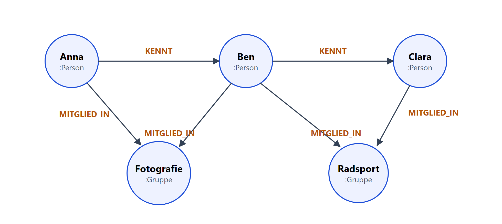

NoSQL-Datenbanken sind nicht-relationale Datenbanksysteme, die entwickelt wurden, um die Grenzen traditioneller relationaler Datenbanken zu überwinden. Sie bieten eine höhere Flexibilität, Skalierbarkeit und Performance in verteilten Systemen, besonders bei großen Datenmengen und dynamischen Datenstrukturen. NoSQL steht für „Not Only SQL“ und bezeichnet eine Reihe von Datenbankmodellen, die unterschiedliche Ansätze für die Datenverwaltung bieten.
Wer abends einen Film startet, einen Social-Media-Feed durchscrollt oder ein Paket verfolgt, das gerade durch ein automatisiertes Lager läuft, nutzt im Hintergrund fast immer eine NoSQL-Datenbank. Streaming-Dienste wie Netflix müssen weltweit Millionen von Zugriffen gleichzeitig verarbeiten, ohne dass ein einzelner Serverausfall den Dienst lahmlegt – deshalb setzt Netflix auf die verteilte NoSQL-Datenbank Apache Cassandra statt auf ein klassisches relationales System. Ähnlich läuft es bei IoT-gestützten Lagern: Unzählige Sensoren melden ständig Bestands- und Standortdaten in unterschiedlichen Formaten, die sich mit starren SQL-Tabellen nur schwer abbilden lassen, mit flexiblen NoSQL-Modellen aber problemlos.
Berufsfelder: IT-nah arbeiten hier Backend-Entwickler*innen, Data Engineers und DevOps- bzw. Site-Reliability-Ingenieur*innen, die solche verteilten Datenbanken aufbauen und betreiben. Aber auch außerhalb der Informatik ist NoSQL relevant: Social-Media-Manager*innen werten große Mengen an Beiträgen und Kommentaren aus, die in dokumentenorientierten Datenbanken liegen; Logistiker*innen und Lagerleiter*innen verlassen sich auf NoSQL-gestützte Echtzeit-Bestandsverfolgung; Marktforscher*innen nutzen NoSQL-Systeme, um große Mengen unstrukturierter Kunden- und Nutzerdaten für Trendanalysen auszuwerten.
Weiterlesen: NoSQL at Netflix | Eine passende Datenbank für IoT-Anwendungen auswählen
Die traditionellen relationalen Datenbanken (RDBMS) stoßen bei Anwendungen mit großen Datenmengen und einer dynamischen Datenstruktur oft an ihre Grenzen. Die Notwendigkeit, Webanwendungen mit Millionen von Nutzern weltweit zu betreiben und gleichzeitig schnelle Reaktionszeiten zu gewährleisten, führte zur Entwicklung von NoSQL-Datenbanken. Sie bieten Vorteile in Bezug auf:
Damit die folgenden Modelle greifbar werden, brauchen wir einen Ausgangspunkt. Eine kleine Community-App würde ihre Nutzerdaten relational so ablegen – mit festem Schema, in dem jede Zeile dieselben Spalten hat:
| NutzerID | Name | Stadt | Registriert |
|---|---|---|---|
| 1 | Anna | Dresden | 2025-03-01 |
| 2 | Ben | Radebeul | 2025-03-04 |
| 3 | Clara | Meißen | 2025-04-11 |
Soll jetzt für Anna zusätzlich eine Liste ihrer Hobbys gespeichert werden und für Ben eine Firmenanschrift, die es bei den anderen gar nicht gibt, wird es relational aufwendig: Man braucht neue Tabellen oder Spalten, die bei den meisten Zeilen leer bleiben. Genau an dieser Stelle setzen die NoSQL-Modelle an – jedes auf seine eigene Art.
Dokumentenorientierte Datenbanken speichern Daten als Dokumente, typischerweise in Formaten wie JSON. Diese Dokumente sind sehr flexibel und können unterschiedliche Datenstrukturen aufweisen. Jede Sammlung (Collection) kann viele verschiedene Dokumente enthalten, die leicht erweitert oder modifiziert werden können.
So sehen die Daten aus. Beide Dokumente liegen in derselben Collection
nutzer – haben aber unterschiedliche Felder:
{
"_id": 1,
"name": "Anna",
"stadt": "Dresden",
"registriert": "2025-03-01",
"hobbys": ["Fotografie", "Klettern"]
}
{
"_id": 2,
"name": "Ben",
"stadt": "Radebeul",
"registriert": "2025-03-04",
"firma": {
"name": "Elbtal GmbH",
"strasse": "Hauptstr. 3"
}
}Eine Abfrage – „alle Nutzer aus Dresden“ – sieht in MongoDB so aus:
db.nutzer.find({ stadt: "Dresden" })Die Seite wirkt beim ersten Öffnen unübersichtlich, hat aber nur drei Felder: links oben die Daten, links unten die Abfrage, rechts das Ergebnis. Der Knopf Run führt die Abfrage aus. Alles läuft im Browser, nichts wird gespeichert.
Schritt 1 – Daten einsetzen. Ersetze den Inhalt des oberen linken Feldes durch diese drei Dokumente:
[
{ "name": "Anna", "stadt": "Dresden", "punkte": 340 },
{ "name": "Ben", "stadt": "Radebeul", "punkte": 120 },
{ "name": "Clara", "stadt": "Dresden", "punkte": 512 }
]Schritt 2 – alles anzeigen. Ins Abfragefeld:
db.collection.find({})
Ergebnis: alle drei Dokumente. Die leeren geschweiften Klammern bedeuten „keine
Bedingung“ – das entspricht SELECT * FROM nutzer;
Schritt 3 – filtern.
db.collection.find({ stadt: "Dresden" })
Ergebnis: nur Anna und Clara. Was in SQL hinter WHERE steht, steht hier als
Feld-Wert-Paar in den geschweiften Klammern:
SELECT * FROM nutzer WHERE stadt = 'Dresden';
Schritt 4 – vergleichen statt gleichsetzen. Für „größer als“ gibt es
kein >, sondern einen Operator mit Dollarzeichen:
db.collection.find({ punkte: { $gt: 300 } })Ergebnis: Anna (340) und Clara (512). In SQL wäre das WHERE punkte > 300.
Schritt 5 – nur bestimmte Felder ausgeben. Das zweite Objekt ist die
Projektion: 1 heißt anzeigen, 0 heißt weglassen.
db.collection.find({ stadt: "Dresden" }, { name: 1, _id: 0 })
Ergebnis: nur noch die Namen. Das ist die Spaltenauswahl aus dem SELECT –
SELECT name FROM nutzer WHERE stadt = 'Dresden'; Das Feld _id
wird immer mitgeliefert, wenn man es nicht ausdrücklich mit 0 abwählt.
Probiere selbst: Gib Clara ein zusätzliches Feld
"klasse": "27INF1" und lass dir danach alle Dokumente anzeigen. Die
Datenbank beschwert sich nicht darüber, dass die anderen beiden dieses Feld nicht
haben – genau das ist der Unterschied zum festen Schema einer Tabelle.
Key-Value Stores speichern Daten als einfache Schlüssel-Wert-Paare. Sie sind besonders nützlich für Anwendungen, bei denen eine extrem schnelle Antwortzeit für einfache Abfragen erforderlich ist, wie das Abrufen von Sitzungsdaten oder Caching.
So sehen die Daten aus. Es gibt keine Tabellen und keine Spalten, nur Paare aus einem eindeutigen Schlüssel und einem Wert:
| Schlüssel | Wert |
|---|---|
session:9f3a7c | {"nutzer":1,"login":"2025-05-04T18:12"} |
nutzer:1:name | Anna |
nutzer:1:punkte | 340 |
warenkorb:1 | ["Artikel12","Artikel87"] |
Die passenden Redis-Befehle dazu:
SET nutzer:1:name "Anna"
GET nutzer:1:name → "Anna"
INCR nutzer:1:punkte → 341
EXPIRE session:9f3a7c 1800 (Sitzung verfällt nach 30 Minuten)Hier gibt es keine Abfragesprache, sondern eine Eingabezeile: Du tippst einen Befehl, drückst Enter und bekommst sofort die Antwort. Jeder Befehl arbeitet auf genau einem Schlüssel.
Schritt 1 – etwas ablegen und wieder holen.
SET kurs:27INF1:raum "A12" → OK
GET kurs:27INF1:raum → "A12"
GET kurs:27INF1:zeit → (nil)
(nil) heißt: Diesen Schlüssel gibt es nicht. Redis meldet keinen Fehler,
sondern schlicht „nichts da“ – dasselbe Verhalten wie .get() beim
Python-Dictionary auf Seite 2.3.
Schritt 2 – zählen. Ein eigener Befehl fürs Hochzählen, weil Zähler die häufigste Anwendung überhaupt sind:
INCR seitenaufrufe → 1
INCR seitenaufrufe → 2
INCR seitenaufrufe → 3
Der Schlüssel muss vorher nicht angelegt werden – beim ersten INCR beginnt
Redis bei 0 und zählt hoch.
Schritt 3 – etwas verfallen lassen. Das ist der Grund, warum Redis hinter Anmelde-Sitzungen und Warenkörben steckt:
SET session:9f3a7c "nutzer=1" → OK
EXPIRE session:9f3a7c 30 → 1
TTL session:9f3a7c → 27 (Sekunden bis zum Verfall)
Nach 30 Sekunden ist der Schlüssel von selbst weg – GET liefert dann wieder
(nil). Eine relationale Datenbank müsste dafür ein Datumsfeld pflegen und
regelmäßig aufräumen.
Schritt 4 – nachsehen, was drin ist.
KEYS * → Liste aller Schlüssel
Und jetzt der wichtige Punkt: Es gibt keinen Befehl „zeige alle
Schlüssel, deren Wert Dresden enthält“. Suchen kann Redis nur über den Schlüssel, nie
über den Wert. Deshalb baut man Schlüssel bewusst sprechend auf –
kurs:27INF1:raum statt k1.
Graph-Datenbanken speichern Daten in Form von Knoten und Kanten, was sie ideal für Anwendungen macht, bei denen die Beziehungen zwischen Daten von zentraler Bedeutung sind. Sie ermöglichen effiziente Abfragen über vernetzte Daten.
So sehen die Daten aus. Nicht Zeilen und Spalten, sondern Knoten (die Objekte) und Kanten (die Beziehungen). Die Beziehung ist hier ein eigenständiges Datenobjekt mit einem Namen und einer Richtung:

Die Abfragesprache von Neo4j heißt Cypher und malt das Muster praktisch nach, das gesucht wird:
MATCH (a:Person {name: "Anna"})-[:KENNT]->(b:Person)-[:MITGLIED_IN]->(g:Gruppe)
RETURN b.name, g.nameGelesen: „Finde Anna, gehe eine KENNT-Kante weiter zu einer Person b und von dort eine MITGLIED_IN-Kante zu einer Gruppe g.“ Ergebnis: Ben ist in den Gruppen Fotografie und Radsport.
Cypher zeichnet das gesuchte Muster mit Textzeichen nach. Drei Bausteine reichen für den Anfang:
( ) runde Klammern – ein Knoten,
z. B. (p:Person)[ ] eckige Klammern – eine Kante,
z. B. [:KENNT]--> der Pfeil – die Richtung der KanteSchritt 1 – ein kleines Netz anlegen.
CREATE (a:Person {name: 'Anna'}),
(b:Person {name: 'Ben'}),
(c:Person {name: 'Clara'}),
(a)-[:KENNT]->(b),
(b)-[:KENNT]->(c);Damit stehen drei Knoten und zwei Kanten in der Datenbank: Anna kennt Ben, Ben kennt Clara. Anna und Clara kennen sich nicht direkt.
Schritt 2 – alles anzeigen.
MATCH (p:Person)
RETURN p.name;
Ergebnis: Anna, Ben, Clara. MATCH ist das Gegenstück zu
SELECT … FROM, RETURN bestimmt die Ausgabe.
Schritt 3 – einen Schritt weit gehen.
MATCH (a:Person {name: 'Anna'})-[:KENNT]->(x)
RETURN x.name;Ergebnis: Ben. Gelesen: „Starte bei Anna, folge einer KENNT-Kante, gib aus, wo du landest.“
Schritt 4 – zwei Schritte weit gehen. Die *2 hinter der
Kante heißt „genau zwei Kanten hintereinander“:
MATCH (a:Person {name: 'Anna'})-[:KENNT*2]->(x)
RETURN x.name;Ergebnis: Clara – die Bekannte einer Bekannten. Genau das ist der Freundschaftsvorschlag in sozialen Netzwerken.
Hier wird der Unterschied greifbar: Für Schritt 4 müsste man in SQL die Tabelle Kennt zweimal hintereinander verwenden (Anna → x → y), also mit sich selbst verknüpfen. Für „über bis zu fünf Ecken“ bräuchte man fünf solcher Abfragen mit ein bis fünf Kopien der Tabelle, zusammengefügt mit UNION, oder eine rekursive Abfrage. In Cypher ändert man dafür nur eine Zahl:
MATCH (a:Person {name: 'Anna'})-[:KENNT*1..5]->(x)
RETURN DISTINCT x.name;Objektorientierte Datenbanken speichern Daten in Form von Objekten, ähnlich wie in objektorientierten Programmiersprachen. Gespeichert werden die Attributwerte jedes Objekts zusammen mit der Information, zu welcher Klasse es gehört. So lassen sich Objekte aus dem Programm direkt ablegen und wieder laden.
So sieht das im Programm aus. Das Beispiel ist Pseudocode: db steht für
eine objektorientierte Datenbank. Gespeichert werden die Attributwerte von anna (name,
stadt, punkte) und ihre Klasse Nutzer. Die Methoden stehen nur einmal in der
Klassendefinition im Programm, nicht in jedem gespeicherten Objekt:
class Nutzer:
def __init__(self, name, stadt):
self.name = name
self.stadt = stadt
self.punkte = 0
def punkte_gutschreiben(self, anzahl):
self.punkte += anzahl
anna = Nutzer("Anna", "Dresden")
anna.punkte_gutschreiben(50)
db.speichern(anna) # das ganze Objekt wandert in die Datenbank
gleiche = db.laden("Anna")
gleiche.punkte_gutschreiben(10) # geladenes Objekt ist wieder ein Nutzer, die Methode der Klasse funktioniertDas hierarchische Modell ist älter als das relationale: Es wurde in den 1960er-Jahren entwickelt (z. B. IBM IMS für das Apollo-Raumfahrtprogramm) und wird in Banken und Versicherungen bis heute betrieben. Die Daten bilden einen Baum: Jeder Datensatz hat genau einen übergeordneten Datensatz (Elternknoten), kann aber beliebig viele untergeordnete haben. Zugegriffen wird immer von der Wurzel aus entlang des Pfades.
Schule
├── Klasse 10A
│ ├── Anna
│ └── Ben
└── Klasse 10B
└── Clara1:n-Beziehungen lassen sich so sehr schnell abfragen („alle Schüler*innen der 10A“). Eine m:n-Beziehung – etwa Schüler*innen, die mehrere Kurse belegen – passt aber nicht in einen Baum: Man müsste Anna unter jedem Kurs erneut speichern (Redundanz). Genau dieses Problem löste das relationale Modell. Die Baumstruktur selbst begegnet dir heute noch im Dateisystem deines Computers sowie in XML- und JSON-Dokumenten (Seite 3.10).
| Modell | Wie sind die Daten organisiert? | Typische Frage, die es gut beantwortet | Wo es an Grenzen stößt |
|---|---|---|---|
| Relational | feste Tabellen mit Zeilen und Spalten | „Wie viel Umsatz je Kategorie im Mai?“ | häufig wechselnde Struktur, sehr tiefe Beziehungsketten |
| Dokumentenorientiert | JSON-Dokumente, pro Dokument eigene Felder | „Gib mir das komplette Profil von Nutzer 1.“ | keine Strukturprüfung, Auswertungen über viele Dokumente aufwendiger |
| Key-Value | Schlüssel → Wert, sonst nichts | „Was steht unter session:9f3a7c?“ | keine Suche im Wert, keine Auswertungen |
| Graph | Knoten und benannte, gerichtete Kanten | „Über wie viele Ecken kennt Anna Clara?“ | große Massenauswertungen, einfache tabellarische Daten |
Der entscheidende Unterschied zum relationalen Modell:
hobbys mit mehreren Werten. Relational wäre das
ein Verstoß gegen die 1. Normalform und müsste in eine eigene Tabelle ausgelagert
werden.firma, das selbst wieder ein Objekt ist – ein Dokument im
Dokument. Relational bräuchte man dafür eine zweite Tabelle mit Fremdschlüssel.firma, und das ist kein Fehler. Es gibt kein festes
Schema, das alle Dokumente einhalten müssten.
Der Preis dieser Freiheit: Die Datenbank prüft nicht mehr, ob die Struktur stimmt. Tippt
jemand Stadt statt stadt, wird das Dokument einfach gespeichert –
und bei der Suche nach Dresden nicht gefunden.
Ein Key-Value Store kennt nur einen Zugriffsweg: über den Schlüssel. Das macht ihn
extrem schnell – die Datenbank muss nichts durchsuchen, sie greift direkt zu. Dafür kann er
aber auch nur das: Eine Frage wie „alle Nutzer aus Dresden“ ist nicht möglich, weil der
Wert für die Datenbank nur ein undurchsichtiger Klumpen ist. Deshalb steckt in der Struktur
der Schlüssel die ganze Logik – nutzer:1:punkte ist bewusst so aufgebaut.
Warum nicht einfach relational? Relational lägen die Daten in den Tabellen Person, Kennt, Mitgliedschaft und Gruppe. Dieselbe Frage bräuchte dann vier JOINs. Jede weitere Stufe „Freunde von Freunden“ bringt zwei JOINs dazu (noch einmal Kennt und noch einmal Person), und die Abfrage wird mit jeder Stufe deutlich aufwendiger. Eine Graph-Datenbank folgt dagegen einfach den gespeicherten Kanten – die Tiefe der Suche kostet sie kaum etwas. Deshalb stecken Graph-Datenbanken hinter Freundschaftsvorschlägen, Empfehlungssystemen und der Betrugserkennung bei Banken.
Relational müsste man das Objekt beim Speichern erst in Tabellenzeilen zerlegen und beim Laden wieder zusammensetzen – dieser Übersetzungsaufwand heißt Object-Relational Impedance Mismatch. Eine objektorientierte Datenbank spart ihn, weil sie das Objekt so ablegt, wie es im Programm existiert. Der Nachteil: Die Daten sind dadurch eng an eine bestimmte Programmiersprache gebunden, und andere Programme kommen schlechter an sie heran.
Ordne den folgenden Szenarien passende Datenbankmodelle zu, indem du die Eigenschaften des CAP-Theorems berücksichtigst:
a) Ein Banksystem
b) Ein Social-Media-Dienst
c) Ein Online-Shopping-System